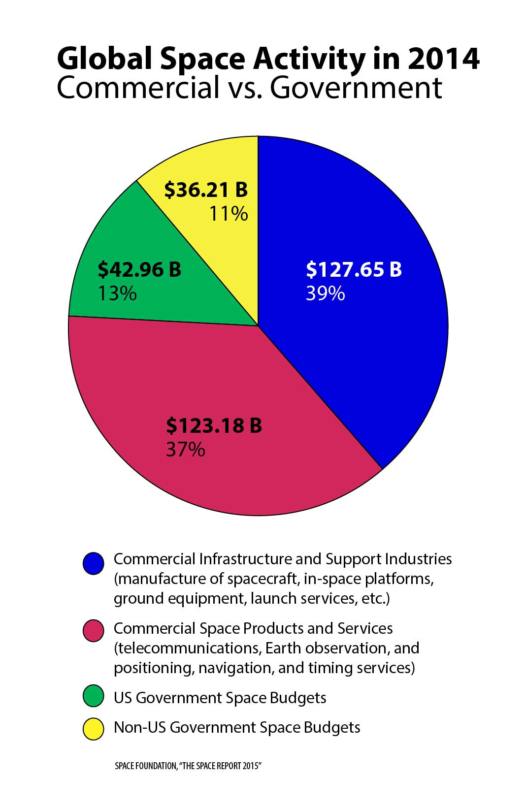

According to this pie chart, 89% of all space activity budget is Commercial, as opposed to 11% governmental.
- Virgin Galactic - Founded by Richard Branson, Virgin Galactic began work on SpaceShipTwo, a spacecraft intended to take tourists on "brief trips to suborbital space", in 2004. Since then, the craft has gone on over 23 test flights, getting over 700 people to sign up for an eventual launch at $250,000 a piece.
- SpaceX - Founded by Elon Musk, SpaceX was the first private company to deliver supplies to the ISS under contract for NASA. The company has won numerous awards for it's historical landings, satellite deliveries, and planned astronaut deliveries.
- Blue Origin - Founded by Jeff Bezos, Blue Origin became the first company to successfully launch a rocket into space and return it safely back to the ground in 2015, greatly advancing the concept of "reusable rockets".
- Space Adventures - Founded by Eric C. Anderson and Peter Diamandis, Space Adventures plans to use Russian-provided spacecraft in order to get tourists within 100km of the Moon's surface, circling and seeing its far side.